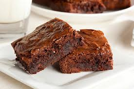

Ingredientes:
- 1 taza de mantequilla derretida
- 1 taza de azúcar
- ½ taza de cacao en polvo
- 2 huevos
- 1 cucharadita de esencia de vainilla
- ½ taza de harina
- ¼ cucharadita de sal
- ½ taza de nueces picadas (opcional)
Preparación:
- Precalienta el horno a 180°C.
- Mezcla la mantequilla, el azúcar y el cacao hasta obtener una mezcla homogénea.
- Agrega los huevos y la vainilla, batiendo bien.
- Incorpora la harina y la sal, mezclando suavemente.
- Vierte la mezcla en un molde engrasado y hornea por 25 minutos.
- Deja enfriar, corta en cuadros y disfruta tu brownie. 🍫